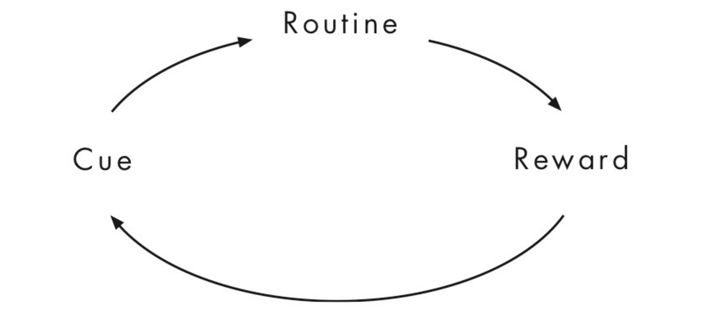
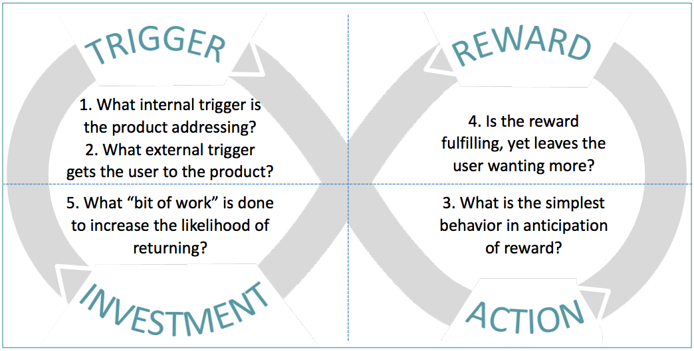

Taking inspiration from both persuasive and behaviour design, habit forming design seems to specifially target the creation or manipulation of an individuals habits. Where it gets confusing, is what specifically defines a habit? Could a one time conversion be counted as a habit? It is an action? A thought? An emotion? To truly understand how to design for habits, its important to understand what and how habits are formed and influenced.
While there are many different phsycological models for habits, they all seem to include similar themes. A habit is a multi-step cyclical process. This means that for an behavior to be considered a habit, it must complete the entire process. Charles Duhigg's habit loop includes three major steps: Trigger, Routine and Reward.
Charles Duhigg is a celebrated psychologist and anthropologist who created the Habit Loop and shared his findings in a great novel The Power of Habit. If you're interested in learning more, I highly recommend this read!
The Hook Model is a slight variance of the Habit Loop created by Nir Eyal whose objective was to understand spectifically how to build habit-forming behaviour into digital products. One of the major differences between this and the typical psychology habit loop is that it includes a final step: Investment. This step looks into developing the habit as a continuous routine, looking into an individual's likelihood to return or repeat.
Since Habit forming design is still relatively new, there are no set design standards or apporaches to manipulaitng or forming habits. Instead, I believe a deep understanding of the factors that influence or change habits can be used to help design products. A few major factors are:
In the case if phsycological manipulation, it is even more important constantly be aware of the ethical implications of your work. Ask yourself: Is it a violation of an individual's free will to intentionally prey upon their habits, and manipulate them to behave in a specific manner? While design does directly pull from psychology, it's important to respect the privacy and decisions of users. Particularly if the direction you guide them could be detrimental. At an extreme case, you could be designing for addication. Is it a designer's responsibility to ensure that products don't form dangerous addictions? Its importnat to consider the moral implications of designing for habits, and to understand the underlying impacts on users and society. Think of the smartphone, did desginers create a reliance that could be considered an addiction?
In order to develop my habit forming design knowledge, I critiqued a smoking app: Quit Pro. This critique will not focus on the typical aspects of interface or experience design such as layout, navigation, flow but rather will focus solely on uncovering the successes and failures of the App as a habit changing mechanism to help smokers quit.The reason I decided to do an analysis of Quit Pro rather than the other apps as that Quit Pro’s methodologies seem to most strongly align with the psychology of habits. The key issues with this application were:
My main takeaway is that it may not be possible to quit smoking through the app alone. Based on the variety of factors that influence the successful habit change, the app may only be able to take a user so far. The digital experience on its own seems to lack the sense of community, belief, support system that is inherent in changing a habit as serious as smoking.